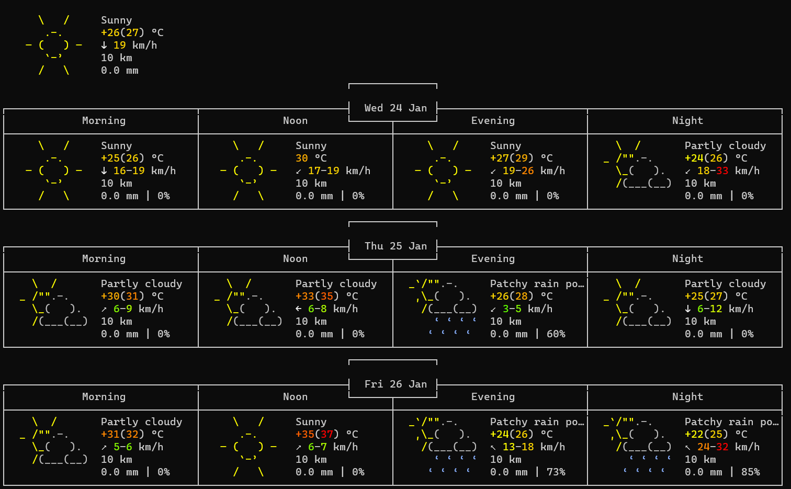
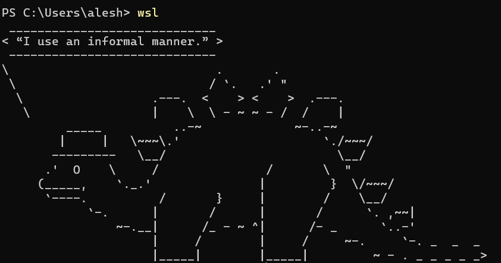

so in the past few weeks i've talked to a few really cool people that i know from informatics and i wanted to implement a bunch of cool terminal tricks.
and i wanted to compile a list for myself and others!
btw i use wsl so some things might not work/work differently for other operating systems
i also don't actually know all that much about computers so like yeah
curl is open source software that allows your device to provide and receive data from a server via a command line interface. it stands for
client URL.
so if your terminal has curl installed, there are a few cool things you can do with it.

for one, you can check the weather using the command curl wttr.in which comes from this!
i don't know about you, but personally, i think that that is pretty cool. you can also specify which area you want the weather forecast
for, such as beijing or paris!
something else you can do is to display a funky dancing ascii-parrot! to do this, you just use the command curl parrot.live
and this is what you get. also, if you're boring and hate rainbows, you
can get hte same thing but in black and white with curl ascii.live/parrot and someone running with curl ascii.live/forrest.
the name looks like forrest gump but i never watched the movie so i wouldn't know...
anyhow, more cool things are curl ascii.live/can-you-hear-me and curl -s https://decapi.me/youtube/latest_video?user=[replacethiswithsomechannelname]
which i'll leave for you to experience for yourself!
there are definitely more cURL terminal tricks out there like checking your email but i don't really have enough time to cover all of it
lol
so cowsay and fortune are two separate things, but it's a lot cooler when you have both together. so cowsay is perl program that, once
installed, can generate ascii art of different animals and objects that can talk. for example, the command cowsay hi will just return
you an ascii cow saying hi. additionally, you can customise a bunch of stuff such as the thing speaking (see the full list with cowsay -l )
and use cowsay -f [insert name of thing] to change it.
now, instead of typing out the message for the cow to say, you can use fortune to give it a pregenerated list of quotes that it chooses from
randomly each time! to do this, install fortune then use the command fortune | cowsay. you can even create a custom list of quotes
for fortune, which this explains very well. also that website is really cool.
just saying.
anyhow, to go a step further, you could even edit your .bashrc file to display a fortune everytime you open a new terminal! here's mine:

so yeah thats all i wanted to say i hope you found that cool too